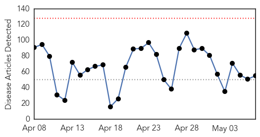

Influenza
30-Day Web Trend
1 alerts, 0 warnings

30-Day Twitter Trend
1 alerts, 0 warnings

Article Locations

Article Confidences

Top Articles:
- 0.998
- How the Midwest's massive bird flu outbreak could threaten humans
- 0.969
- Massive Impact, Uncertain Future – Phenomena
- 0.961
- Bird flu in Minnesota's poultry farms: Why you should care
- 0.960
- Despite U.S. efforts, bird flu thought to spread between farms
- 0.892
- Poultry industry receives some good news on bird flu
- 0.888
- Dog Flu Questions Answered
- 0.751
- May 7, 2015 Archives
- 0.751
- May 7, 2015 Archives
- 0.751
- May 6, 2015 Archives
- 0.751
- May 6, 2015 Archives
- 0.751
- May 6, 2015 Archives
- 0.751
- May 6, 2015 Archives
- 0.751
- May 6, 2015 Archives
- 0.751
- May 6, 2015 Archives
- 0.687
- Help! Bird flu deaths overwhelming disposal
- 0.686
- HA gets ready for Southern Hemisphere Influenza Vaccination Programme
- 0.616
- Pneumococcal vaccine cuts hospitalisations by 70 percent
- 0.568
- Iowa using incinerators to cope with 20 mn casualties of avian flu — RT USA
Top Tweets:
-
No tweets found for May 07, 2015
Unknown
30-Day Web Trend
0 alerts, 0 warnings

30-Day Twitter Trend
3 alerts, 0 warnings

Article Locations

Article Confidences

Top Articles:
- 0.933
- WHO plays down risks of epidemic outbreak in Nepal
- 0.917
- Chicago Tribune
- 0.917
- Chicago Tribune
- 0.917
- Chicago Tribune
- 0.917
- Chicago Tribune
- 0.917
- Chicago Tribune
- 0.917
- Chicago Tribune
- 0.917
- Chicago Tribune
- 0.917
- Chicago Tribune
- 0.917
- Chicago Tribune
- 0.917
- Chicago Tribune
- 0.917
- Chicago Tribune
- 0.917
- Chicago Tribune
- 0.910
- The world windows to Thailand
- 0.910
- The world windows to Thailand
- 0.901
- Nepal earthquake exposes gaps in disaster preparedness
- 0.893
- WHO plays down risk of epidemic outbreak in Nepal
- 0.892
- Health staff key to preventing flu in older people
- 0.866
- Millions of Chickens Euthanized as Active Outbreak of Avian Flu Spreads
- 0.770
- Whatcom health officials say 45 sick from E. coli outbreak
- 0.761
- Daily Exchange
- 0.754
- Flesh-eating disease sends Windsor area woman to hospital
- 0.748
- The Rise and Fall of Smallpox
- 0.733
- Good news for poultry
- 0.730
- Support pours in for mom with flesh-eating disease
- 0.724
- Concern over kids flu vaccine
- 0.695
- UK vote: Conservatives ahead in shock exit poll figures
- 0.695
- Mystery shrouds the Lusitania’s tragic sinking, 100 years on
- 0.695
- French telecom giant in hot water over Israel partnership
- 0.692
- Listeria sickens five and a factor in two deaths
- 0.689
- Worcester MagWorcester Mag
- 0.659
- French judges to investigate CAR 'sex-for-food' scandal
- 0.656
- Central Africa to sue French soldiers accused of abusing children
- 0.651
- More than 2,700 medical staffs working in quake-hit Nepal
- 0.627
- Olympus tied to some cases of tainted scopes
- 0.627
- Olympus tied to some cases of tainted scopes
- 0.623
- African Union warns against elections in Burundi as clashes erupt
- 0.619
- US military 'training Syrian rebels' to counter IS group
- 0.601
- Sheffield residents raise £455,100 for Nepal
- 0.599
- Population health techniques key to lowering health care costs, top Detroit physician leaders say
- 0.588
- Zoos clash with sanctuaries over treating elephant TB
- 0.585
- NANKANA SAHIB City News
- 0.574
- Iran releases seized Maersk Tigris cargo ship
- 0.569
- UN reinforces DR Congo troops after peacekeepers killed
- 0.569
- NSA phone spying program ruled illegal by US court
- 0.568
- Gwadar’s Thalassemia Patients Survive With ‘Hope’ · Global Voices
- 0.562
- Your Thursday morning news round up
- 0.546
- Rise in syphilis cases in Tel Aviv area requires more testing and treatment
- 0.545
- FDA reveals 142 cases of tainted scopes
- 0.543
- UK election: Final polls show late surge for Labour, but hung parliament still likely
Showing top 50 articles...
Top Tweets:
-
No tweets found for May 07, 2015